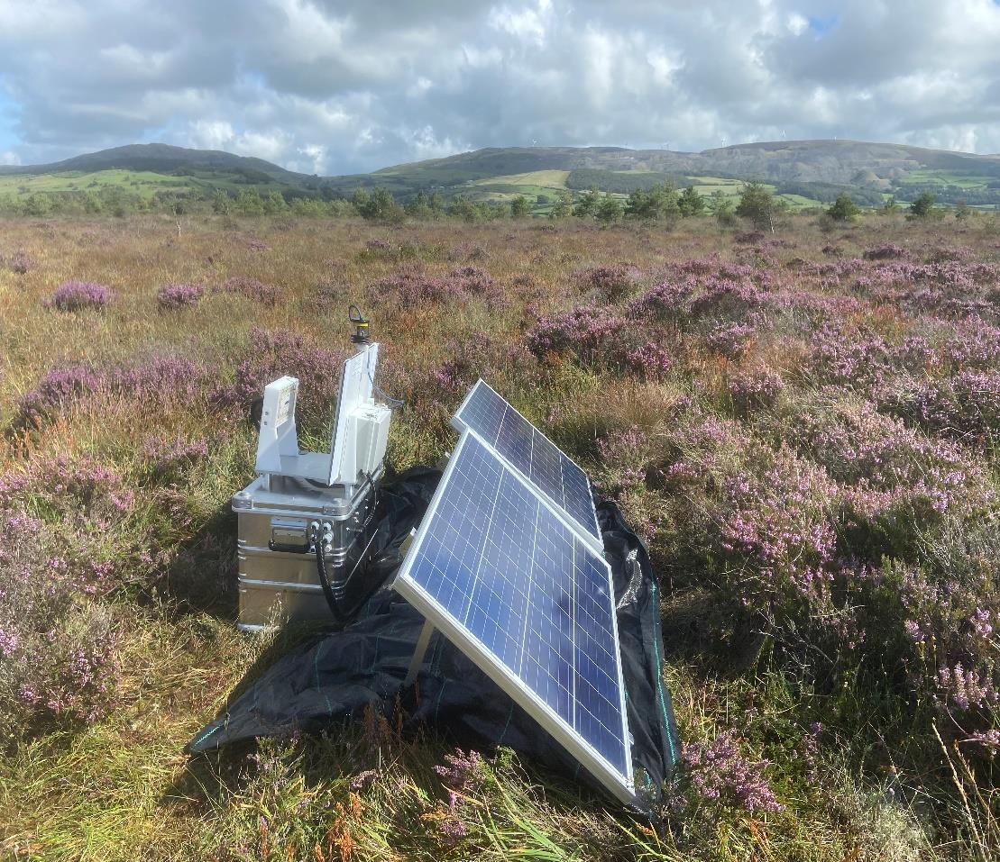
Assembly
Assembling the AMI-System
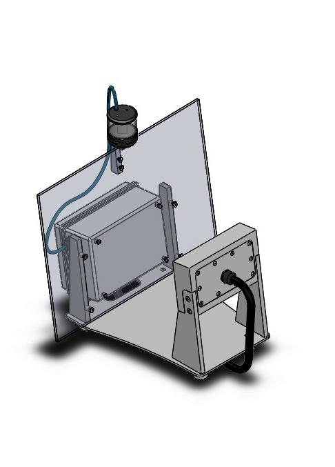
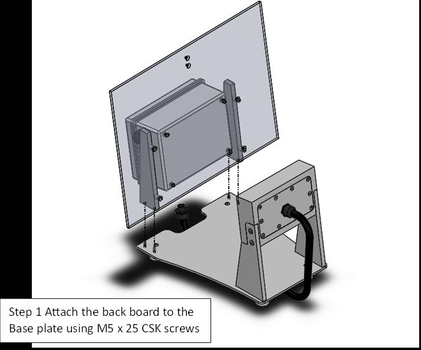
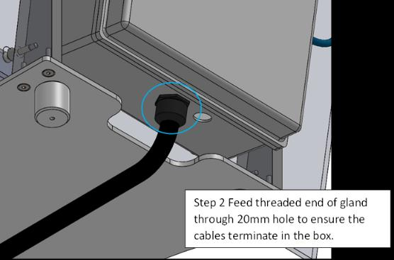
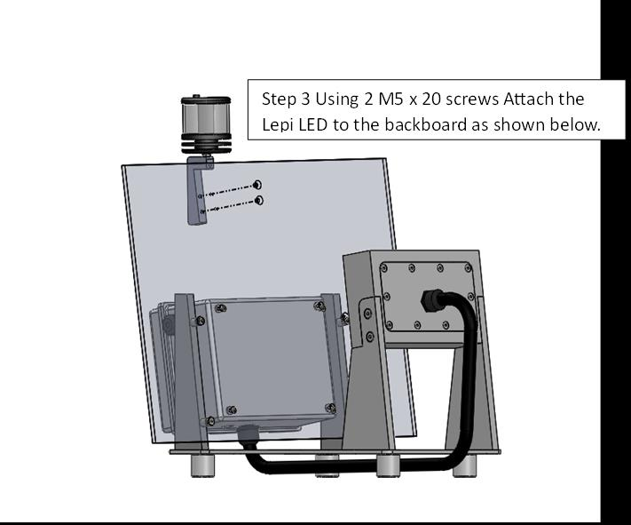
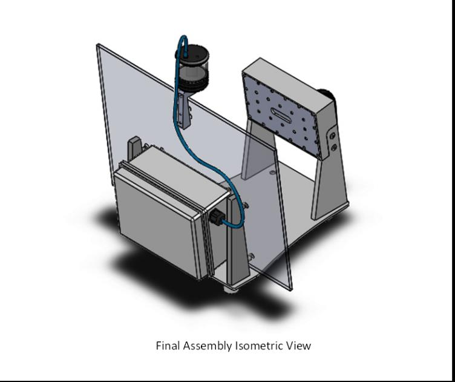
Connecting Camera and Light Ring
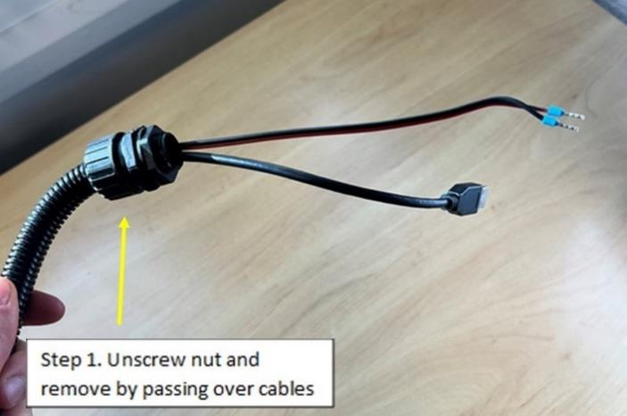
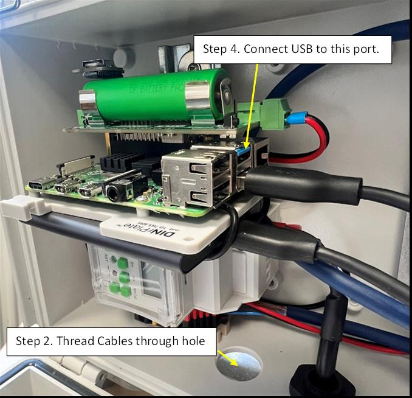
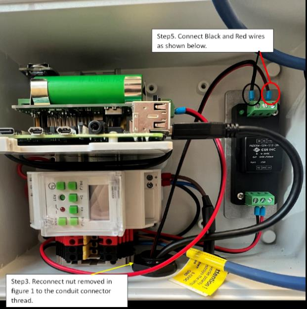
The camera and lighting cables can be seen the figure above. They are coming out of the end of the protective conduit from the back of the camera box. To thread and connect the cables into the electronics box and connect the conduit to the box, please follow the steps below:
- Following the cable coming out of the back of the camera box, unscrew and remove the thin black plastic conduit connector nut (step 1 in the figure).
- Thread the USB and power cables through the hole in the electronics box (step 2 in the figure).
- Push the conduit and connector as far into the hole (same as step 2) as it will go, then replace the nut removed in step 1, passing it over the USB and power cables, then screwing it onto the conduit connecting until tight, this should be slightly more than hand tight so use a spanner (step 3 in the figure).
- Connect the USB into the port shown in the figure (step 4 in the figure).
- If your AMI-System has a black voltage regulator on the right, then you need to connect the black and red exposed wire to the upper right terminal of the voltage regulator (step 5 in the figure). To do this use a small flathead screwdriver to unscrew the screw on the front of the terminal. Place the metal part of the wires in the holes - black wire into the left (0V) slot and red wire into the right (+Vo) slot - then screw tight again. Once tightened give the wire a light tug to check it is securely in place. If your AMI-System does not have a voltage regulator, then connect the black and red exposed wires to a black and a red terminal block at the bottom-centre of the electronics box instead.
-
To connect the LepiLED or UV-light tube (depending on the AMI-System you have):
- Feed the LepiLED/UV-light cable through the gland on the right side of the electronics box.
- Screw the nut on the inside of the box to tighten. Also screw the cap on the outside of the box tight.
- Connect the brown and blue wires to the right-hand side of the bottom red and black terminal block. Blue neutral wire into black terminal, brown live wire into red terminal. To do this use a small flathead screwdriver to unscrew the screw on the front of the terminal block. Place the metal part of the black wire in the hole on the right side of the terminal block and then screw tight again, once tightened give the wires a light tug to check they are securely in place. Note this step can be fiddly.
Connecting to Power – Benchtop and/or Battery Box
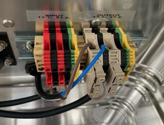
-
A cable extends from the bottom of the electronics box and
terminates in two wires: one brown and one blue.
- If using the battery box, these should be passed through the hole in the back of the battery box and connected to the DIN rail mounted terminals, labelled Output 1+ (brown cable into beige plastic terminal which will have to be flipped up) and Output 1- (blue cable into black plastic terminal, see figure). Fasten using a small flat head screwdriver.
- If using a benchtop power supply or a 12 V wall plug, connect the terminal wires - brown to the positive output terminal (usually red), blue to negative output terminal (usually black). The power supply should be set to just above 12 V (e.g. 12.5 V) and just above 2 A (e.g. 2.5 A). If using a 12 V wall plug, it should be rated at 2.5 A or more.
-
To turn the system on, press the
MAN(-)key until the text at the bottom of the screen saysON ON. -
To turn the system off, press the
MAN(-)until the text readsOFF OFF. Note: When the AMI-System is in the field, set it toAUTO OFF, so that it follows the program. When it turns on at the set times, it will readAUTO ON. Therefore, if you are deploying the AMI-System when it is scheduled to be on, you will be setting it toAUTO ON(there will be no option forAUTO OFF).
Connecting to the Raspberry Pi
The simplest way to use the Raspberry Pi is to use the AMI Bluetooth App on an Android phone when the AMI-System is powered on. After connecting, you can use it to:
- Check if camera and harddrive are connected,
- Check if it is taking pictures,
- Check the time and date and set it if necessary (do this at least once after setting the system up),
- Check the harddrive's storage space, and
- To set the interval in which pictures are taken (the default is 10 seconds, but we recommend to change this to 60 seconds).
Setting the Timer Relay
Find the complete manual for the timer relay in the manufacturer's documentation. Instructions for the most common settings are provided below.
Set Time on Timer Relay
-
Press the
Clockkey and theMANkey simultaneously to toggle between 12/24-hour clock mode. -
Keep the
Clockkey pressed and then press theD+key to set the day. -
Keep the
Clockkey pressed, then press theH+key to set the hour.00–23in24-hourmode.01–12in12-hourmode.
-
Keep the
Clockkey pressed, then press theM+key to set the minutes. - Click the
MANbutton to return to the main screen.
Set a Schedule
- Press
PRto set the schedule for when AMI-System will turnON. -
Press
D+stepwise for day selection as given below.MO TU WE TH FR SA SU(All weekdays).MO TU WE TH FR SA(Exclude Sunday).MO TU WE TH FR(Exclude Weekends).MO TU WE TH(Exclude Friday & Saturday).SA SU(Only Weekends).FR SA(Only Friday & Saturday).TU WE TH FR SA SU(Exclude any single day).MO/TU/WE/TH/FR/SA/SU(Include Single day).MO WE FR(Exclude Alternate day).TU TH SA(Exclude Alternate day).
-
Press
H+to edit and increment the hour. Use theMAN(-)key to decrement hours. - Press
PRto set the schedule for when AMI-System will turnOFF. -
Press
D+stepwise, as above, for day selection. Please note that theOFFday will be the day after theONday as it passes00:00. For example, if theONschedule isMO WE FR, theOFFschedule should beTU TH SA. - Press
H+to set the hour. - Press the
Clockbutton to set the schedule. -
Press
MAN(-)to set AMI-System toOFF OFFuntil you set the AMI-System up in the field, where you will need to set it toAUTO OFF. Note: This will sayAUTO ONif you are currently within the programmedONperiod.
Set-up
Checks Before Deployment
-
Check that everything within the grey electronics box at the back
of the AMI-System is plugged in and all wires are secure. The box
should include:
- Harddrive (SSD),
- MicroSD card inserted into the left of theRaspberry Pi,
- Watchdog/UPS battery (18650 lithium-ion battery), and
- RTC battery (CR1220 button battery)
- Check that solar cables are crimped, ready for use.
- Ensure that all openings and glands are properly sealed. If not, apply sealing, e.g., silicon or hot glue, to ensure weatherproofing.
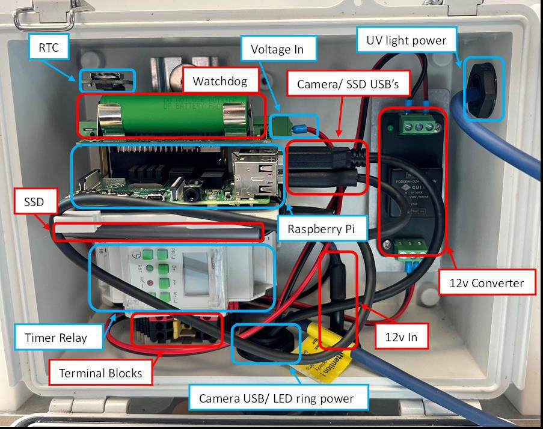
Equipment List
General
AMI-System
Solar
*Recommended: 120 Ah 12 V Absorbed Glass Mat (AGM) Lead Acid deep cycle or Marine Lead Acid Battery.
**Recommended: 100 W solar panels in parallel (12 V panels) – Max open circuit voltage (Voc) 25 V, max short circuit current (Isc) 25 A.
Solar Panel Set-up
Put Together Solar Rigging
- Clear an area large enough to contain the solar panels and AMI-System.
- Lay down the matting and pin it down, use a hammer if needed.
- [Add own instructions for solar rigging set up]
Attach Solar Panels to Rigging
- [Add own instructions]
AMI-System Set-up
Screw AMI-System to Box and Connect (Should Be Done Before Connecting to Power)
- The feet of the AMI-System trap have screw holes. Put the AMI-System on the lid of the box and line up the holes in the AMI-System feet with the holes in the metal box lid.
- Use a black rubber washer, followed by the silver metal washer and screw to attach the AMI-System to the box using the ¼ inch Allen key. Having a battery in the battery box while completing this step is helpful because it acts as a counterweight.
- The wire coming out of the back of the AMI-System, with blue and brown ends, should have conduit and a conduit connector nut. Unscrew the nut and feed the wires through the hole at the back of the battery box.
- Once through, screw the nut back tightly on the inside of the box, securing the wires in position.
- Inside the metal box, attach the blue and brown wires to the ‘LOAD’ fuses. Flip up the “door” of the brown (+1) terminal and loosen the screw with the small flathead screwdriver. Insert the brown wire into the brown terminal (+1) and tighten the screw until the wire is secure. Repeat with the blue wire in the black (-1) terminal.
- Attach the white landing board to the back board of the AMI-System with clips.
Note: If the fuse head is lifted up, the power is disconnected.
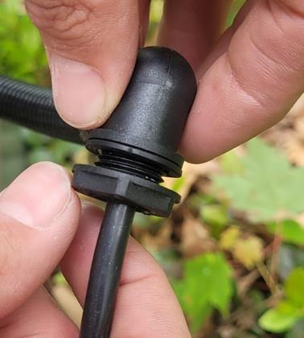
Connect Batteries
- Connect the battery wires to the batteries. The red wire goes to the positive terminal and the black wire to the negative terminal. Put the washer on first, followed by the metal loop at the end of the battery wire, another washer, and finally the nut. Tighten with the 13 mm socket. It is safer to complete the negative terminal first.
- Repeat with the second battery.
- Place the two batteries in the aluminium battery box, facing the same way.
- Connect the battery wires to the wires leading to the SunSaver via the brown connectors.
- The battery status LED on the SunSaver should turn green.
Connect Solar Panels
- The two solar panels will each have a male and female terminal. Connect the two female terminals with a female connector and the two male terminals with a male connector.
- Add conduit to the two black cables, together or separately. Mark the positive and negative ends before adding the conduit, or use a multimeter to identify them.
- Connect the two black cables to the solar panels via the female and male connectors.
- Pass the two black cables, ending in naked wires, through the grey glands on the side of the battery box.
- Connect the wires to the ‘SOLAR’ fuses on the DIN rail by loosening the screw with the flathead screwdriver and inserting the wire into the terminal. Connect the positive end to the +1 output and the negative end to the -1 output. Tighten the screws until the wires are secure.
- Use Velcro or cable ties to secure loose wires and cables to the metal pole of the solar rig.
- If the system is working, a green light should appear in the AMI-System box to show that the batteries are connected and fully charged.
Checks in Field: Before You Leave the AMI-System, Please Check the Following
-
Within the battery box, check the solar status light on the
SunSaver DL.
- If there is no colour, but it flickers every 5 seconds, it is not charging and has not been connected properly.
- If it is solid green, with occasional flickers, it is charging.
- If it is red, there is an error.
-
Check the battery status lights on the SunSaver DL.
- If it is green, the battery is full or nearly full.
- If it is yellow, the battery is half full.
- If it is red, the battery is low (flashing) or empty (solid).
-
Turn on the AMI-System at the timer relay.
- Check that the red light on the timer relay comes on.
- Check that the LepiLED (UV light) comes on.
- Turn the timer relay back to
AUTO OFF.
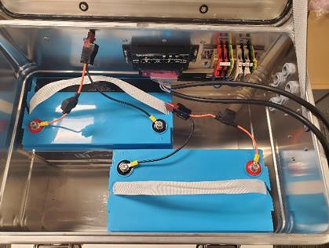
Maintenance
Check the AMI-System
- Check that the timer relay is reading the correct time.
- Clean the solar panels to remove any dirt and leaves.
- Clean the white board with water, if dirt builds up.
- Check inside the grey box at the back of the AMI-System and inside the main aluminium box for water ingress and insects to ensure it is still fully sealed.
- Check there is no damage to the wires between the AMI-System and the solar panels/mains power source.
-
Check that the LepiLED is working by pressing
MAN(-)until the screen displaysON ON. Remember to return it toAUTO OFFby continuing to pressMAN(-). - Replace the desiccant bag in the battery box, if needed.
Changing the SSD Hard Drive
Every few weeks, you will need to change the SSD card. You can change it less often if needed, but you this will increase the amount of data to be uploaded. The SSD card is located above the timer relay and plugged into the Raspberry Pi.
-
You can only change the SSD card when the system is switched off.
Therefore, check on the timer relay that it is on
AUTO OFF.-
If not, please turn the system by pressing
MAN(-)until the screen displaysOFF OFFand wait until the lights on the Raspberry Pi stop flashing.
-
If not, please turn the system by pressing
-
Unplug the SSD card from the Raspberry Pi and plug it into your
computer. Open the folder containing the images and check that it
has been populated and that the images look correct. Check the
following:
- Are the images lit evenly?
- Are images in focus?
- Are there any obstructions that you would be able to remove? For example, long pieces of grass.
- Is the metadata correct? Have the pictures been taken at the right time?
- Bring back the SSD card for data upload.
- Plug in an empty SSD card to the AMI-System.
- Make sure all SSD cards have been correctly labelled.
Take-down
In the Field
-
Turn off the AMI-System on the timer relay by pressing
MAN(-)until it readsOFF OFF. - Remove and label the SSD card.
- Open the aluminium battery box and unplug the batteries.
- Unscrew the solar wires from the terminals on the DIN rail with a flat-headed screwdriver and pull the wires out of the battery box.
-
Unscrew the wires connecting the AMI-System to the battery box using a
flat-headed screwdriver.
- The brown load fuse will need to be flipped up to gain access to the correct screw.
- Pull the wires out of the battery box. A conduit connector nut on the inside of the battery box will need to be unscrewed first.
- Using the allen key to undo the screws attaching the AMI-System to the top of the battery box. This must be done with care, as the AMI-System can easily fall to the ground as the last screw is removed.
- Remove the batteries from the battery box.
- Before removing the solar panels from the rigging, unlatch the 2 x female connectors and 2 x male connectors. Use the plastic wrench usually provided with solar connectors, or tweezers.
- Remove the solar panels.
- Take down the rigging and matting.
Storage
- The AMI-Systems should be stored indoors and upright.
- Remove the watchdog battery from the electronics box at the back of the AMI-System. Charge if needed.
-
Check the charge (voltage V) and capacity (ampere-hours Ah) of the
car batteries.
- Charge if needed.
- Recondition if needed (under 60% of original Ah). If it is below 50% Ah and reconditioning does not improve this, the battery cannot be used to power the AMI-System.
Troubleshooting
Hardware
Power
If the raspberry pi is not turning on and the timer relay light is not on, there might be a problem with the power source, connection or fuse.
- Connections: Check that all connections are secure, especially the stepdown cable connecting the terminal block and the watchdog.
-
Fuse: Check that the “door” on the beige
Output 1+terminal in the battery box is tightly closed and holds a fuse when flipped up. Replace a missing or blown fuse using one of the spares in the plastic pocket attached to the SunSaver 20L. -
Power source: Within the battery box, inspect
the SunSaver 20L.
- If the battery status LED is red, the battery is empty or low. If there is no light, the battery has not been connected properly.
- If the solar-panel status LED is red, either flashing or solid, there is an error with the panels.
- If all status LEDs are green but the Raspberry Pi remains off, use a multimeter to find where power is interrupted. Test the solar, battery, and load circuits.
-
Check that the solar wires lead to the correct terminals:
positive to
1+and negative to1-.
Connecting the Terminal Block and the Watchdog
LepiLED
If the LepiLED or ring lights are not turning on, you should check the connections at the back of the camera/lighting box. You can do this by carefully unscrewing the gland and seeing if any of the wires are slack, especially the larger black cable which is a USB C cable connecting the camera. This can be plugged back in, if it has come loose. You should also check that the USB C cable and the two wires connecting the camera and lights are securely connected to the Raspberry pi in the electronics box.
Software
Camera
If the images are grey, and it says unable to connect, make sure that the camera USB C cable is connected properly. If the problem persists, revise the camera instructions in the Assembly section and make sure you are writing the correct camera ID.
Time/Date
If the timestamps on the images are wrong, revise the instructions about setting the Real Time Clock.
Hard Drive (SSD)
In the scenario where the AMI-System trap is turned on and the SSD is not connected, or the PI, for some reason, does not detect the drive, the system will save images to the SD card rather than the SSD. To fix this we need to check if images have been saved to the SD card and remove them, and then check that we can get the SSD connected properly.